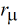
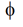

Bias Dependence of Resistor Body Current
The r3 model includes three basic forms of bias dependence. First, from the depletion (p-n junction or MOS) pinching of the conducting channel of the resistor. Second, from velocity saturation. And third, from self-heating.
The basic p-n junction depletion pinching bias dependence comes from the analysis of [1], with the simplification of [2] (which merges the vertical and lateral bias dependence into a single bias dependent form with geometry dependent parameters). The applicability of the same general form of bias dependence for poly resistors, where the MOS depletion effect pinches the resistor body, was shown in [3]. The fundamental form of the depletion pinching model is
where V21 = V(i2) - V(i1) and V1c = V(i1) - V(nc). Here, dp is the depletion potemtial (which is just the model parameter dp), df is the depletion factor, and gf is the conductance factor; these are determined from instance and model parameters as detailed in the section on geometry dependence.
The velocity saturation model is a mobility reduction term that divides the conductance factor. The model is smooth and symmetric, has value 1 when V21 = 0 , and asymptotically approaches 1+(E-ecorn)/ecrit for large field E= V21/(leff_um + dx1sat) (leff_um is defined in the next section).
The V21 used in the above expressions is smoothly limited so as not to exceed a saturation voltage Vsat , which is calculated as the V21 at which the output conductance becomes zero. To determine Vsat a slightly modified form of the velocity saturation model is used (the asymptotic form noted above), that allows closed form solution and guarantees that any imprecision in calculation of Vsat is such that the output conductance at saturation is positive, so that there are no “wiggles” around the transition to saturation. The smooth transition is implemented via [8]
where atsi = ats=/(1 + atsl=leff_um) is a model parameter that controls the limiting. This limiting function differs from those often used in compact MOSFET models; it preserves symmetry. The control voltage used is also limited, to the pinch-off voltage
The self-heating affects the current through the temperature variation of the model parameters, primarily the sheet resistance. The current flowing between nodes n2 and n1 in see Figure 41-1 is then
Figure -3

factor used in the velocity saturation model
Pinch-off behavior is primarily of importance for JFETs, and four models, selectable via the sw accpo switch, are available. The default is sw_accpo = 0, which is backwards-compatible with version 1.0.0. The next computationally simplest, and therefore fastest to simulate, limiting is selected with sw_accpo = 1, however this model only fairly crudely approximates the physically expected 1 - exp(-V21/
t) variation of I21 with V21 in full pinch-off. Setting sw_accpo = 2 selects a model that more accurately approximates that behavior, at the expense of increased computation time, and sw_accpo = 3 selects an even more accurate, but slightly more computationally expensive, form. A minimum conductance is enforced in full pinch-off to avoid numerical computation issues.
The self-heating affects the current through the temperature variation of the model parameters, primarily the sheet resistance. The current flowing between ports n2 and n1 in see Figure 41-1 is then
Return to top